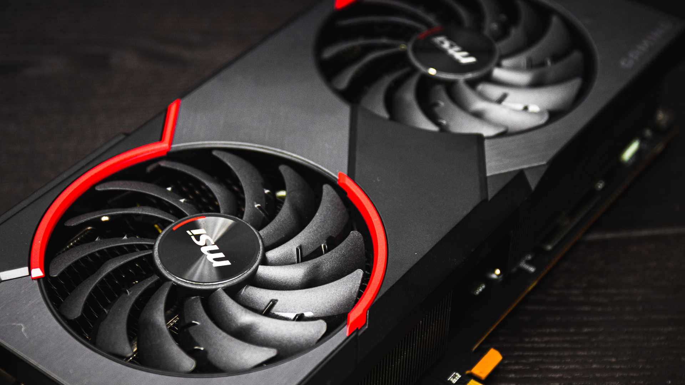

Cyberpunk 2077, potrebbe arrivare il trofeo "You are breathtaking"
di Meneghin Simone, 28/11/2019

L’E3 2019 è stato un evento unico e sicuramente verrà ricordato nei prossimi anni per il panel dedicato agli sviluppatori di Cyberpunk 2077. Durante la presentazione Microsoft, i ragazzi di CD Projekt Red hanno deciso di far impazzire tutti i videogiocatori, mostrando il primo trailer del gioco. Alla fine del filmato c’è stata una seconda sorpresa con l’arrivo sul palco di Keanu Reevs.
Il famoso attore infatti, ha prestato volto e voce a Johnny Silverhand, una figura chiave all’interno del mondo di Cyberpunk 2077. Averlo in carne ed ossa sul palco dell’E3 ha mandato in visibilio i fan ed in particolare un ragazzo ha urlato a Keanu Reevs la seguente frase: “You’re breathtaking” traducibile con “Sei mozzafiato”.
Con la maestria da attore e intrattenitore, Keanu Reevs ha risposto al ragazzo con la sua stessa frase e l’ha estesa a tutto il pubblico scatenando un boato di approvazione. Link al video su youtube

Lo scambio di battute è presto diventato virale in rete, tanto che gli utenti si sono mobilitati per fare una precisa richiesta agli sviluppatori di Cyberpunk 2077. Sulla piattaforma Change.org è stata pubblicata una nuova petizione pubblica per chiedere a CD Projekt Red di inserire un particolare trofeo all’interno del gioco.
Il completamento al 100% del titolo, secondo il promotore, dovrebbe sbloccare la ricompensa “You’re Breathtaking”. Al momento in cui si sta scrivendo, hanno firmato oltre 70 mila persone e l’obiettivo di 75 mila sembra abbondantemente alla portata. Considerando che la richiesta non è assolutamente difficile da esaudire, si spera che i ragazzi di CD Projekt Red possano accogliere con piacere questa proposta e rendere Cyberpunk 2077 un po più mozzafiato.
- Top 3 - gli articoli più letti
-
 Call of
Duty: Modern Warfare, la recensione
Call of
Duty: Modern Warfare, la recensione
-
 Star
Wars Jedi: Fallen Order,
la recensione
Star
Wars Jedi: Fallen Order,
la recensione
-
 Xiaomi entra nel mondo
dei monitor con Mi Surface Display, un 34 pollici WQHD con FreeSync,
la recensione
Xiaomi entra nel mondo
dei monitor con Mi Surface Display, un 34 pollici WQHD con FreeSync,
la recensione
- La recensione del mese
- MSI RX 5700 XT Gaming X, la recensione
- I giochi più attesi